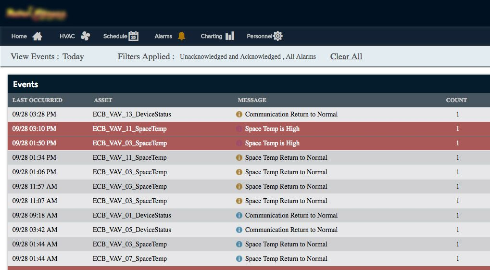
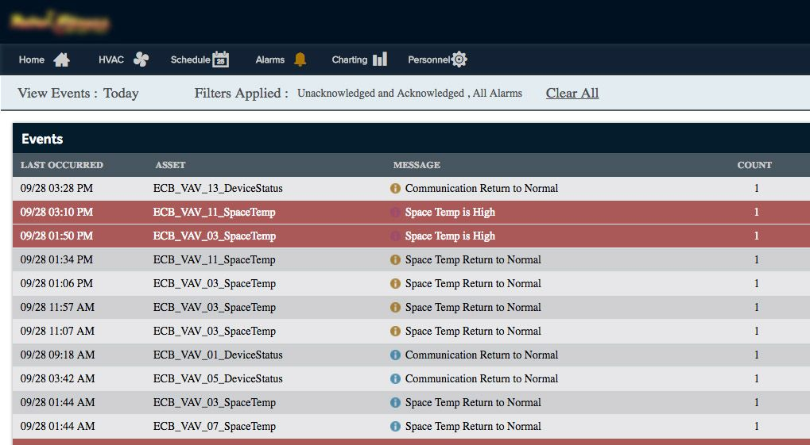

Office Space IoT Web App
Big Data, IoT, Analytics, Website, Front-end Development, Visual Design

One of our products at Controlco is an in-browser UI that houses building automation controls. Users are able to monitor and adjust HVAC, lighting, schedules, and alarms through the interface. At the time of conception, Controlco didn't have any true designers or any design guidelines at all, so the products were designed by engineers. I was tasked with taking the existing product and apply new design standards to improve the experience for our users.
The current product is a reflection of Controlco's focus on functionality over design. Elements were hashed together without a nod towards the latest and most effective trends in UX. I examined the current design and functions, keeping marks on areas of poor user interaction. I also spoke to a few end users to get input and feelings about the product.
 


The current design presents a few outstanding issues:
From my inquiries, I learned that users wanted a way to see an overview of their systems upon logging in. I translated this requirement as to needing a homepage that will guide users as to what systems need attention.

The site map showing the new website structure with the homepage

Wireframe depicting the architecture and flow of the new layout
Users log in and are greeted by table summaries of each system's data: HVAC, lighting, alarms, and central plant. Through the data shown on the homepage, users can then figure out where they should focus their attention towards.
I was maintaining communication with the team of data modelers throughout the entire process. It was a highly iterative process that required a lot of redrafting of element placements, especially because of new equipment installations onsite.


The final design artifacts were handed over to the engineering team to complete the implementation. Development began with the backend functionalities while I was finishing the final phase of the design.
I ran a few guerilla-styled usability tests with some of the data modelers via remote screensharing. I recruited a total of six data modelers to carry out the same tasks. Three of them used the old interface while the other three used the new interface. The tasks include:
For the old interface, the average time to complete the two tasks, respectively, were 2.44 seconds and 25.32 seconds. For the new interface, the average times were 1.02 seconds and 20.21 seconds. Although by a small margin, users are able to complete their common tasks faster with the newly designed interface.

"How to improve usability and aesthetics while keeping same function?"
Interviewed current users to identify areas of need
Learned that platform should have homepage
Showed wireframes to VP and internal team to address issues that arise from lack of homepage
Came up with simple brand guidelines
Handed off source files and documentation to engineers to build
Did usability test with six customers and concluded that those using new interface finished tasks in shorter period of time than those using old interface
The final product was warmly received by all stakeholders (VP, engineering, and data modelers). This project represented a milestone in my Controlco career because I was given the opportunity to introduce my own design process as well as industry-standard tools to the company. The company ended up using this design as the standard for all enterprise level projects under this customer. It was a push in the right direction that initiated a new mentality towards better design.